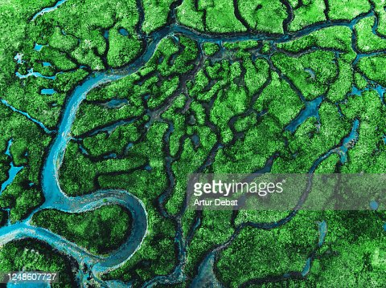

For the preservation of the land, sea, and habitat of fauna and plants, it is a state-owned region close to National Parks and sanctuaries. A Conservation Reserve Management Committee is in charge of managing it. Any property controlled by the government may be designated as a conservation reserve by the state government after discussing it with nearby communities. The first conservation reserve in the nation is located near Tiruppadaimarathur, Tamil Nadu. The village’s residents took steps to create a conservation reserve in order to protect the birds that nest there. Residents of conservation reserves are not subject to any restrictions on their privileges. India currently has 100 conservation reserves, which together encompass 4927.28 km2, or 0.15 per cent, of its total land area.
Any community or private land may be designated by the State Government as a Community Reserve provided the inhabitants of that community or the person concerned consent to provide such areas for the preservation of the local flora and fauna as well as their customs, cultures, and practises. The creation of such a place attempts to preserve biodiversity while simultaneously enhancing the socioeconomic circumstances of the local population. The Reserve is managed by a community reserve management committee. The State Government may designate the area as community land by notification if a community or a single person has offered to volunteer to conserve wildlife and its habitat. Within the Community Reserve, no changes to the way land are used are permitted unless they are authorised by a resolution that has been approved by both the State Government and the Management Committee. In India, there are 219 active community reserves, totalling 1446.28 km2, or 0.043 per cent of the nation’s landmass.
In India, there are two types of protected area systems: community reserves and conservation reserves. Local communities and private organisations work together to administer these reserves. Community-led wildlife protection initiatives now can be recognised and legally supported thanks to changes made to the Wildlife Protection Act in 2003. It provides a flexible framework for protecting wildlife without compromising the demands of the local population. Due to private land ownership and use, protection in and around existing or prospective protected areas has declined. This has led to the creation of these categories.
Soil works for you if you work for the soil by using management practices that improve soil health and increase productivity and profitability immediately and into the future. A fully functioning soil produces the maximum amount of products at the least cost. Maximizing soil health is essential to maximizing profitability. Soil will not work for you if you abuse it. Managing for soil health (improved soil function) is mostly a matter of maintaining suitable habitat for the myriad of creatures that comprise the soil food web. This can be accomplished by disturbing the soil as little as possible, growing as many different species of plants as practical, keeping living plants in the soil as often as possible, and keeping the soil covered all the time.
Soil disturbance can be the result of physical, chemical or biological activities. Physical soil disturbance, such as tillage, results in bare and/or compacted soil that is destructive and disruptive to soil microbes, and it creates a hostile environment for them to live. Misapplication of farm inputs can disrupt the symbiotic relationships between fungi, other microorganisms, and plant roots. Overgrazing, a form of biological disturbance, reduces root mass, increases runoff, and increases soil temperature. All forms of soil disturbance diminish habitat for soil microbes and result in a diminished soil food web.
Plants use sunlight to convert carbon dioxide and water into carbohydrates that serve as the building blocks for roots, stems, leaves, and seeds. They also interact with specific soil microbes by releasing carbohydrates (sugars) through their roots into the soil to feed the microbes in exchange for nutrients and water. A diversity of plant carbohydrates is required to support the diversity of soil microorganisms in the soil. In order to achieve a high level of diversity, different plants must be grown. The key to improving soil health is ensuring that food and energy chains and webs consist of several types of plants or animals, not just one or two.
Biodiversity is ultimately the key to the success of any agricultural system. Lack of biodiversity severely limits the potential of any cropping system and increases disease and pest problems. A diverse and fully functioning soil food web provides for nutrient, energy, and water cycling that allows a soil to express its full potential. Increasing the diversity of a crop rotation and cover crops increases soil health and soil function, reduces input costs, and increases profitability.Living plants maintain a rhizosphere, an area of concentrated microbial activity close to the root. The rhizosphere is the most active part of the soil ecosystem because it is where the most readily available food is, and where peak nutrient and water cycling occurs. Microbial food is exuded by plant roots to attract and feed microbes that provide nutrients (and other compounds) to the plant at the root-soil interface where the plants can take them up. Since living roots provide the easiest source of food for soil microbes, growing long-season crops or a cover crop following a short-season crop, feeds the foundation species of the soil food web as much as possible during the growing season.
Healthy soil is dependent upon how well the soil food web is fed. Providing plenty of easily accessible food to soil microbes helps them cycle nutrients that plants need to grow. Sugars from living plant roots, recently dead plant roots, crop residues, and soil organic matter all feed the many and varied members of the soil food web.Soil cover conserves moisture, reduces temperature, intercepts raindrops (to reduce their destructive impact), suppresses weed growth, and provides habitat for members of the soil food web that spend at least some of their time above ground. This is true regardless of land use (cropland, hayland, pasture, or range). Keeping the soil covered while allowing crop residues to decompose (so their nutrients can be cycled back into the soil) can be a bit of a balancing act. Producers must give careful consideration to their crop rotation (including any cover crops) and residue management if they are to keep the soil covered and fed at the same time.